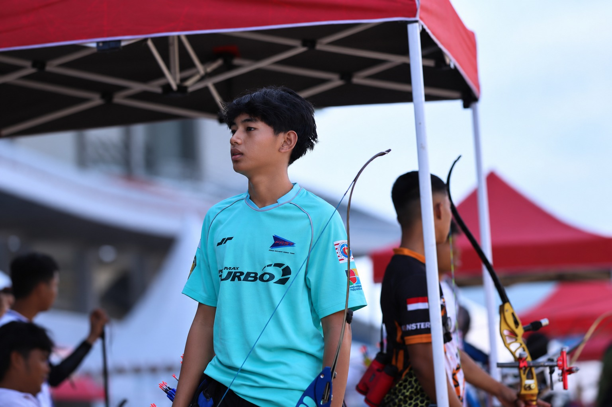

Saya Ghaisan nabiel — seseorang yang senang merangkai kecerdasan buatan menjadi alat yang benar-benar berguna, sambil terus belajar membaca pasar dan dunia di sekitarnya.

Saya tumbuh dengan rasa ingin tahu yang besar terhadap cara kerja sesuatu, bagaimana sebuah sistem bisa "berpikir", bagaimana pasar bergerak, dan bagaimana cerita yang baik bisa membuat orang lain ikut peduli pada hal yang sama.
Ketertarikan itu membawa saya untuk belajar merancang dan membangun sistem berbasis kecerdasan buatan, sambil di sisi lain terus mendalami dunia investasi dan pasar finansial. Bagi saya, keduanya saling melengkapi: teknologi memberi alat, dan pemahaman pasar memberi konteks untuk menggunakannya dengan bijak.
Saya percaya proses belajar yang paling jujur adalah dengan mencoba, gagal, lalu mencoba lagi, dan membagikan perjalanan itu apa adanya kepada siapa pun yang tertarik untuk belajar bersama.
Terbuka untuk diskusi, kolaborasi, atau sekadar bertukar pikiran tentang AI dan pasar finansial.